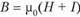
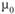
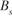
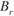
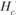

//Магнитні кола
Найбільша заслуга у вивченні явища електромагнітної індукції належить відомому англійському фізику М. Фарадею - неперевершеному майстру проведення фізичного експерименту.
Відкриття у 1820 р. данським фізиком X . Ерстедом зв’язку
магнітного поля з електричним струмом спонукало багатьох
учених розширити дослідження явищ, пов’язаних з магнітним полем. Маючи широту мислення, визначний фізик і дослідник М. Фарадей передбачив можливий зворотний зв’ язок
магнітного поля і електричного струму, коли поява магнітного поля спричинює виникнення електричного струму. Після
тривалих наукових пошуків він у 1831 р. отримав перші позитивні результати: домігся того, що в замкнутих провідниках, які знаходилися в змінному магнітному полі, виникав електричний струм. Явище отримало назву електромагнітної індукції, а струм, який виникає у провідниках, назвали індукційним струмом.

На малюнку зображено винекнення струму після впливу магніта на катушку
Магнітне поле утворюється не тільки навколо провідників із струмом, а й постійними магнітами. Їх можна виготовляти тільки з небагатьох речовин. Але всі речовини, вміщені в магнітне поле, намагнічуються, тобто самі утворюють магнітне поле. Тому вектор магнітної індукції в однорідному середовищі відрізняється від індукції магнітного поля 0 в тій же частині простору у вакуумі. Отже, значення магнітної індукції залежить від середовища, в якому існує магнітне поле, тобто магнітна індукція характеризує магнітне поле з урахуванням дії цього середовища.
Величина , що дорівнює відношенню модуля магнітної індукції B поля в довільному середовищі до модуля магнітної індукції B0 цього ж поля у вакуумі, характеризує магнітні властивості цього середовища, і її називають магнітною проникністю.
{kind=link}
На малюнку зображено провідник, навколо якого існує магнітне поле
Крива намагнічування матеріалу - це графічне зображення залежності магнітної індукції В від напруженості зовнішнього магнітного поля Н, обидві ці величини мають однаковий фізичний зміст, однакову розмірність - тесла і визначають напрямок і величину магнітного поля.
При додатку зовнішнього магнітного поля намагніченість матеріалу зростає як за рахунок збільшення напруженості поля H, так і за рахунок збільшення власного намагніченості матеріалу I, тобто  , Де - магнітна проникність вакууму .
{kind=link}
{kind=link}
На кривій намагнічування виділяють початкову криву намагнічування 0 АС. Ця ділянка характеризує процес намагнічування матеріалу, сумарний магнітний момент якого при відсутності зовнішнього магнітного поля дорівнював нулю (точка 0) внаслідок хаотичного розташування доменів. Збільшення магнітної індукції В під дією зовнішнього магнітного поля H відбувається за рахунок орієнтації доменів в напрямку цього поля. Магнітна індукція В досягає своєї межі (насичення), коли всі магнітні моменти доменів зорієнтовані у напрямку зовнішнього поля. Ордината точки С, в якій закінчується початкова крива намагнічування, відповідає індукції насичення .
{kind=link}
При досягненні намагніченості насичення магнітна індукція може збільшуватися тільки за рахунок підвищення напруженості поля. При зменшенні напруженості H (розмагнічування) магнітна індукція також зменшується, але по кривій, яка не збігається з початковою кривою намагнічування. Після зняття зовнішнього магнітного поля, тобто коли його напруженість стане рівною нулю ( H = 0), феромагнетик НЕ розмагнічується остаточно, в ньому зберігається залишкова магнітна індукція  (залишкове намагнічування). Для остаточного розмагнічування необхідно змінити напрямок зовнішнього магнітного поля на протилежне (- H ). Напруженість цього поля, що викликає повне розмагнічування, називається коерцитивної силою (  ).
Магнітна проникність (відносна магнітна проникність) - μ, визначає здатність матеріалу до намагнічування.{kind=link}
{kind=link}
{kind=link}
Крива намагнічування (петля гистерезиса) феромагнетика
Магнітне коло, Магнітопровід — це сукупність пристроїв з магнітом'якого матеріалу з високою магнітною проникністю (електротехнічна сталь, пермалой), що утворюють замкнену систему в якій за наявності магніторушійної сили (МРС) створюється магнітний потік.
Магнітопровід електротехнічного пристрою — магнітна система електротехнічного пристрою чи сукупність декількох її частин у вигляді окремої конструктивної одиниці.
Магнітопроводи використовуються як складові елементи радіоелектронної та електротехнічної апаратури: трансформаторів, дроселів, пускачів, контакторів, магнітних голівок, фільтрів, контурів, електричних машин (генераторів, електродвигунів) тощо.
Виходячи з технології виготовлення магнітопроводи поділяють на три групи:
- пластинчасті;
- стрічкові;
- формовані.
Як уже зазначалося, будь-яке магнітне поле породжене електричним струмом. Цей струм може протікати як в областях мікроскопічного масштабу (елементарні струми, які породжують поле постійних магнітів), так і в областях макроскопічного масштабу (струми в обмотках котушок індуктивності) і навіть у мегамасштабних областях (наприклад, струми в іонізованому міжзоряному газі). Здатність струму утворювати магнітне поле, тобто магнітний потік, характеризують магніторушійною силою МРС (за аналогією із ЕРС як здатністю електричного поля утворювати потік електричних зарядів, тобто струм). Кількісну характеристику МРС буде наведено в наступному підрозділі.
Магнітні елементи пристроїв автоматики та зв’язку сконструйовані таким чином, що магнітний потік утримується всередині певних елементів конструкції (звичайно, деяка частина магнітного потоку розсіюється, але це небажане явище). Найкраще утримують “у собі” магнітний потік феромагнетики.
Магнітним колом називають сукупність феромагнітних елементів, призначену для підсилення, направляння та концентрації магнітного потоку, всі електромагнітні явища в якій можуть бути описані за допомогою понять магніторушійної сили, магнітної напруги та магнітного потоку.
{kind=link}
{kind=link}
Магнітопровіди
ліворуч-тороподібний формований магнітопровід
праворуч - пластинчастий магнітопровід Ш-подібної конфігурації
Подібно до електричного, стан магнітного кола можна визначити трьома основними законами, які за аналогією із електричними колами називають законами Кірхгофа і Ома.
Перший закон Кірхгофа – алгебраїчна сума потоків, що збігаються в будь-якому вузлі магнітного кола дорівнює нулю:
{kind=link}
{kind=link}
Зако́н О́ма — це твердження про пропорційність сили струму в провіднику прикладеній напрузі. Закон Ома справедливий для металів і напівпровідників при не надто великих прикладених напругах. Якщо для елемента електричного кола справедливий закон Ома, то говорять, що цей елемент має лінійну вольт-амперну характеристику.
В електротехніці прийнято записувати закон Ома в інтегральному вигляді
{kind=link}
Наглядний експеримент,що доводить дійсніть Закону Ома
Що таке закон повного струму?
Закон повного струму пов'язує струм і напруженість магнітного поля. Прямо зараз вивчимо закон повного струму.
Повний струм–це алгебраїчна сума струмів, що проходять через обмежену замкнутим контуром поверхню.

На картинці зображені два дроти, по яких течуть струми I 1 I 2. Навколо струмів є контур L. А що таке цей контур? Це просто замкнена лінія, яку ми подумки провели навколо струмів. Струми проходять через поверхню, обмежену контуром L. В якості позитивного напрямку обходу контуру вибираємо напрям за годинниковою стрілкою.
Повний струм дорівнює магнітному напруги вздовж контуру
Це рівність, встановлене експериментально, і пов'язує струми з напряженносью їх магнітного поля.
Магнітне напруга вздовж замкнутого контуру часто називають магніторушійної силою. Інша назва магнітного напруги вздовж замкнутого контуру – намагнічує сила. Визначення закону повного струму: магніторушійна сила F вздовж замкнутого контуру L дорівнює повному струму Σ I, пронизує поверхню, обмежену цим контуром. Формула закону повного струму:
F = Σ I
ЦФормула закону повного струму